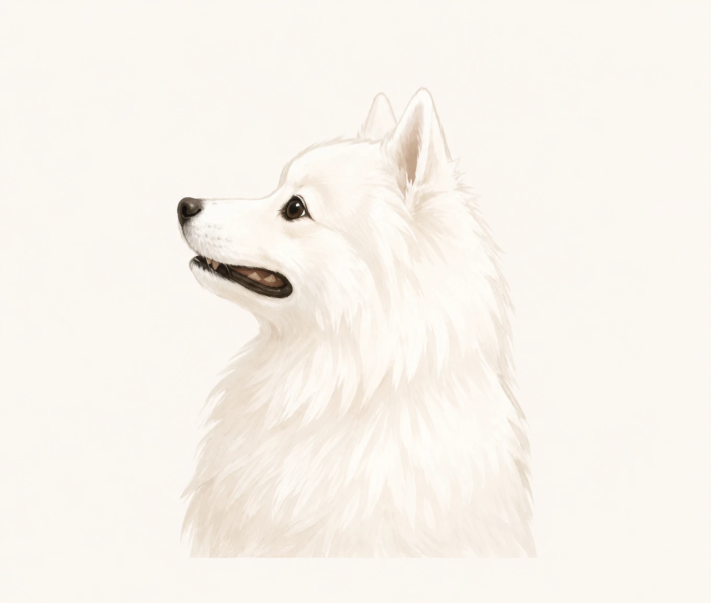
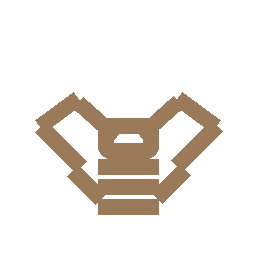
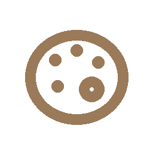

情報を伝える
記事200本超の執筆経験。構成設計から執筆・画像制作まで対応します。
Web Production / Writing / Workflow Improvement
IT業界での業務改善・顧客対応の経験を活かし、
情報設計からWeb制作、コンテンツ運用まで一貫して取り組んでいます。
 ABOUT
ABOUT
情報を整理し、課題を見つけて形にすることが得意です。 IT実務・業務改善・コンテンツ制作の経験を活かし、 Webと文章で価値を届けます。
状況を整理しながら必要なことを考え、制作・改善の両面から組織に貢献します。
経歴ページを見る
記事200本超の執筆経験。構成設計から執筆・画像制作まで対応します。
情報設計を重視し、ユーザー目線の構造と導線を意識したWebページ制作に取り組んでいます。
顧客対応・業務改善の経験を活かし、課題解決につながる仕組みづくりを行います。
 WORKS
WORKS
焦げない台所
レシピとコラムの読み物型サイト
料理をテーマに、レシピ・コラム・プロフィールまで設計した読み物型サイトです。 企画、文章作成、情報設計、デザイン、HTML/CSS/JavaScript実装まで一貫して制作しました。
KOGE CINEMA NOTE
映画検索・レビュー記録サイト
TMDB APIを利用し、映画検索・詳細表示・お気に入り保存・レビュー記録ができる映画管理サイトです。 検索体験や作品詳細ページの見やすさを意識し、Next.js / TypeScript / Tailwind CSSで制作しました。
 EXPERIENCE
EXPERIENCE
これまでの実務経験や、継続して取り組んできた活動についてご紹介します。
要件定義や顧客折衝、業務改善プロジェクトに従事。
データ移行や自動化ツールの構築・納品など、幅広い実務経験があります。
現場での自走力が評価され、正社員へ引き抜かれました。
WordPressブログ運営やWebライティングを継続。 記事執筆からSEO分析、画像制作まで一貫して対応しています。
HTML/CSS・JavaScriptを用いたサイト制作に取り組んでいます。
企画・情報設計・デザイン・コーディングまで一貫して制作しています。
 SKILLS
SKILLS

Upstream / IT
Web
Web制作や記事執筆、サイト運用など、お気軽にご相談ください。
内容を確認のうえ、2〜3営業日以内にご連絡いたします。